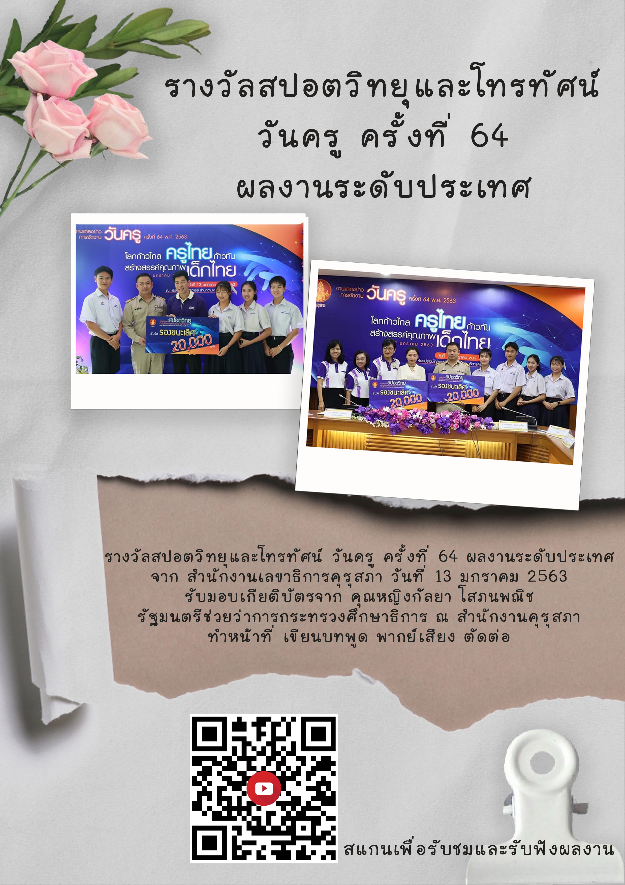
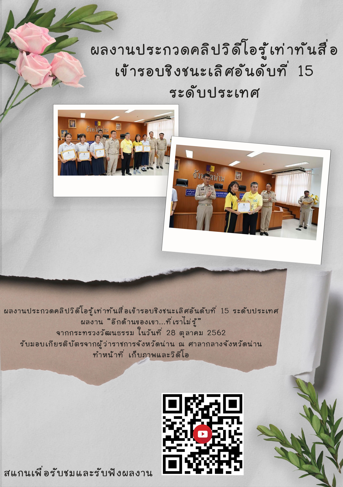
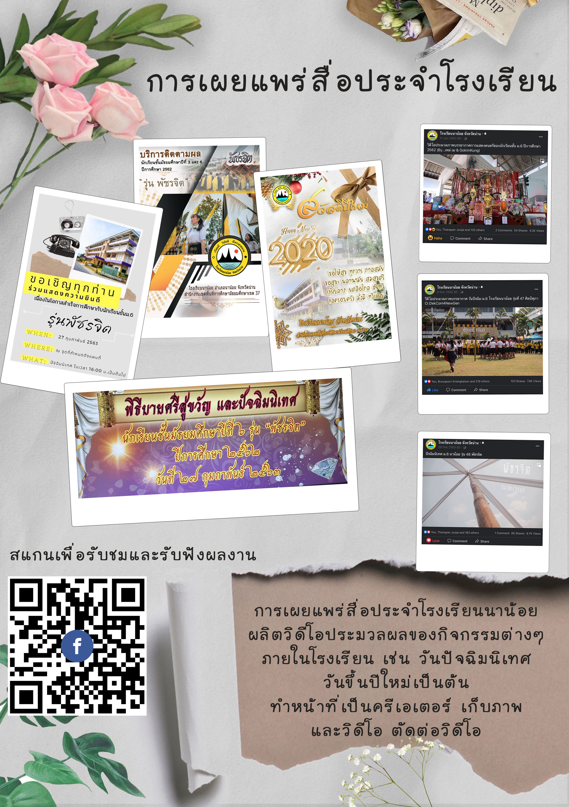
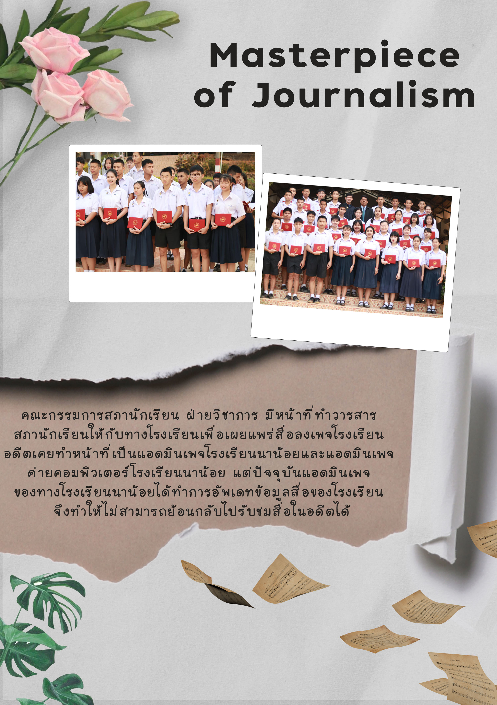
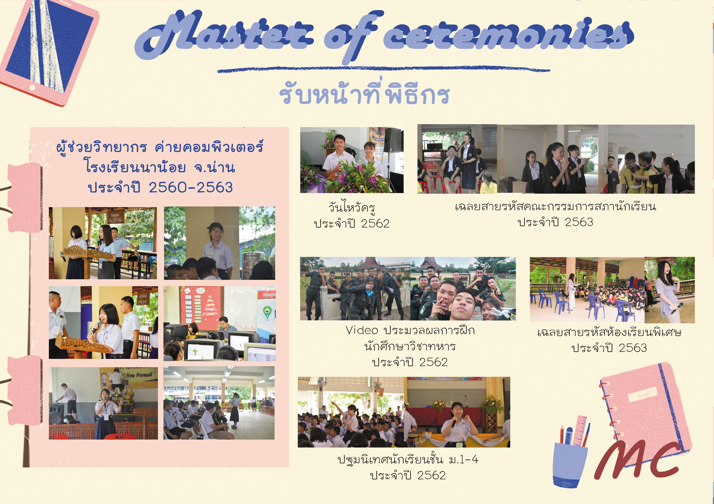
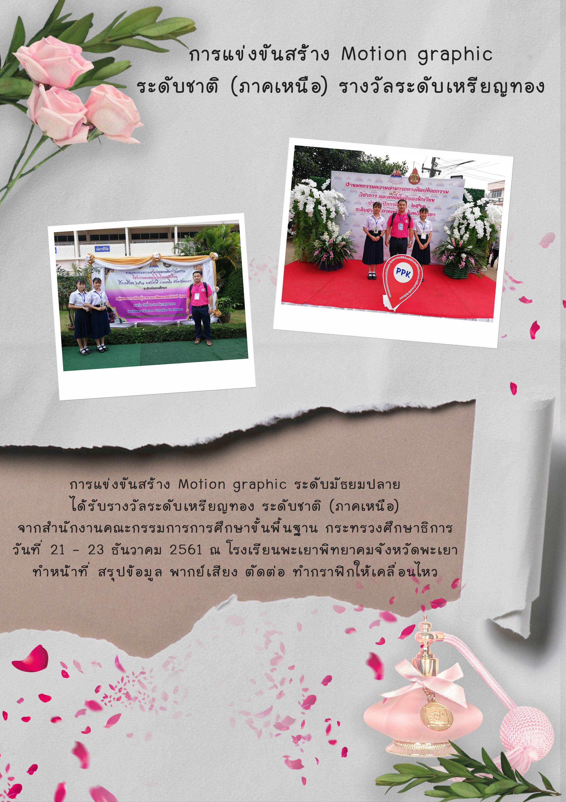
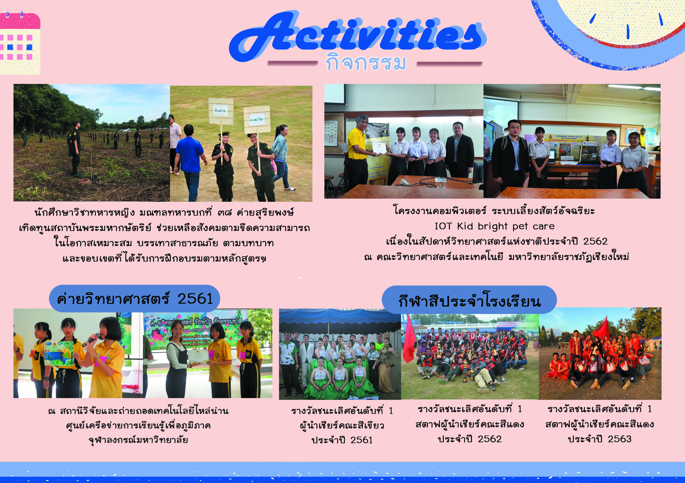

About My Education
Over the past few years, I have had the opportunity to participate in programs that have enhanced both my academic skills and work experience in diverse environments. These include deep learning in AI and developing professional skills through international work experiences. These programs have not only strengthened my technical knowledge but also provided me with opportunities to develop teamwork and communication skills on a global scale.
AI summer camp
❤︎ May 7 - 19, 2023
❤︎ Yuan Ze University, Taiwan. For Computer Science junior students from Kasetsart University.
❤︎ The curriculum covered topics such as Python programming, neural networks, deep learning, AI ethics, and more.
Work and Travel
❤︎ April 4 - Jul 7, 2024
❤︎ Foxwoods Casino Resort in Connecticut, USA, with a retail associate position.
❤︎ Daily Thread store at Tangle Outlet, Foxwoods Casino Resort CT, USA, as a retail associate.
Salesforce
❤︎ 2021-2024
❤︎ I have learnt platform that offers interactive modules to help users gain valuable skills in Salesforce technology and related areas like CRM, app development, and digital marketing. It provides hands-on experience through real-world challenges in a safe, simulated environment called the Trailhead Playground.
Machine Learning
❤︎ September 30, 2024 – January 5, 2025
❤︎ Participated in the TaiChi project with a position in machine learning engineering, app development, data analytics and UX/UI design. Received 2 scholarships from Tamkang University and Kasetsart University.
About my high school
Design Experience
Created graphics, websites, and infographics, developing creativity, visual communication, and design thinking skills.

Radio Production
Produced radio spots by working on scriptwriting, voice recording, audio editing, and sound design.

Short Film Production
Created short films from planning and scriptwriting to filming, directing, editing, and storytelling.

School Media Publishing
Created and distributed school publications and digital content, including articles, layouts, videos, and social media posts.

Journal Writing
Wrote articles and creative pieces for school journals and media platforms, strengthening writing and communication skills.

School MC
Served as Master of Ceremonies for school events, competitions, and activities, building public speaking and event coordination skills.

Motion Infographic
Created motion infographics for presentations and digital media, turning information into engaging visual content.

Activities & Leadership
Participated in school clubs, media projects, volunteer work, and creative activities that supported teamwork and leadership growth.
